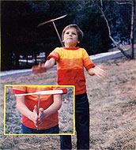
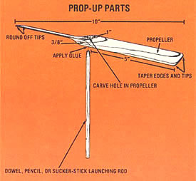

You and your young'uns (or grand young'uns) will enjoy this easy-to-make propeller toy.
Way back in 1920 - when I was but a whippersnapper and aviation was just entering its adolescence - one of the now legendary "barnstormers" flew a World War I surplus biplane (a model officially called the JN4, but more affectionately known as the "Jenny") above the one-block-long downtown section of our small Oklahoma town. Then he leveled off the aircraft and eased the man-made bird onto a nearby pasture.
Airplanes were real novelties in those days, and by the time I arrived at the landing site, the pilot had already collected a good bit of cash from the more affluent (and braver) members of the community for rides in the flying machine. Being up in neither bucks nor courage, however, I was content merely to study the plane from a distance. I was fascinated with the propeller, and after some close inspection I decided to construct my own "aircraft" . . . modeled on that curved blade.
My first propeller toy - or prop-up, as I call it - was just rough-whittled out of a piece of scrap lumber, but it shot straight up in the air for a good 50 feet when "launched"! In fact, I use the same design today to make the old-fashioned homemade "helicopters" ... because the toy is simple to build, it's constructed from readily available items, and - most important - it works!
All you'll need to fashion this easy-to-put-together hand-hewn rocket are a piece of lightweight wood, a pocketknife, a cylindrical wooden rod roughly the thickness of a pencil, some glue, and a marker. As you can see in the drawing, the toy is made up of only two glue-assembled parts: a propeller blade and a launching stick.
In order to construct the propeller, you'll first need to find a rectangular scrap of lightweight (but heavier than balsa) lumber. I generally use white pine. Because the blade's shape determines how well the aircraft will fly, it's important that the wood be of the proper dimensions. The width of the whittled blade should be a little more than twice its thickness . . . and the length must be at least ten times the width. The prop-up pictured here has a 3/8" X 1 " X 10" propeller. (You can vary the size of your blade, but be certain to maintain the approximate thickness-to-width-to-length ratio of the foregoing figures.)
Once you've located a suitable wood scrap, measure it lengthwise and mark the midpoint on both sides. Then draw a line completely around the middle of the propeller, connecting the two dots in the process. This line divides the propeller into two five-inch-long segments.
Now you're ready to begin whittling! In order to give the prop-up its lofting ability, you'll need to carve the wood into a characteristic propeller shape. With the block positioned so that the long edge is facing you and the inch-wide surface is on top, imagine the right-hand five-inch segment of the blade sloping up and away from you ... while the left-hand portion slants up toward you. Sound difficult? It's actually very easy to do.
Beginning at the middle line (which you just drew) and working toward one tip of the piece of wood, whittle from the top of one edge to the bottom of the opposite side. Then turn the wood upside down and repeat the process on the underside of the carved piece, forming a diagonal blade.
Next, shape the other five-inch segment in the same manner, but angle that section in the opposite direction. Both sides of the propeller should be made as thin as possible ... otherwise the blade will be too heavy and the prop-up won't fly. You'll also want to streamline the spinner further by tapering the edges of the blade and rounding off the corners ... and, finally, by sanding the whittled wood to give your aircraft a smooth surface.
At this point, all your tiny helicopter lacks is a launching stick. Measure the propeller again to find the exact midpoint, and mark this spot. Then simply carve (or drill) a hole large enough to allow your launching stick to fit snugly in the center of the blade. (You can use any thin, wooden cylindrical rod for this part. I find a nine-inch "all-day sucker" stick ideal for the task, but a pencil will serve the same purpose.) Apply glue to one end of the rod ... insert that tip in the propeller's hole . . . and let the adhesive dry.
You're done! To test the prop-up, hold the toy so that the blade is on top . . . and give the rod a whirling flip between your palms. If you've launched the hand-hewn rocket correctly, the toy will spiral high above your head. (If, however, the airplane divebombs to your feet , simply twirl the stick in the opposite direction on the next takeoff.)
The handmade helicopter can be flown indoors . . . but I prefer to launch my propup outside, where it can soar as high as 50 feet in the air. And I've found that by releasing it at a slight tilt, the airborne toy can be flown from person to person ... and can even be caught by the stick, with a little practice!
Once you begin piloting this aircraft, you'll probably find that all the potential woodcarvers in your family - young and old alike - will want to join in the fun!
|
 |
 |
|